前言
工作内容更倾向于代码审计，并且攻防相关的内容也和传统的hw红蓝对抗有较大差距，为了能够在代码审计方向做出较好成果以及在开源项目中挖掘高质量漏洞，CodeQL毋庸置疑是一个十分值得学习的工具。
本文旨在分享在学习过程中遇到的难点【没有写的部分可能表示理解难度不大 就是忘了】，并根据官方文档调整了下学习顺序，由于CodeQL持续更新，且市面上通用大模型对其QL的编写并没有像编程语言那样能根据自然语言编写出合理且可行的QL语句，于是便系统性的学习理解QL语法，欢迎讨论指正。
环境配置
安装W:\environments\codeql\codeql-cli
配置环境变量
vscode配置可执行文件路径

下载sdk，并放置在cli的同级目录下
git clone https://github.com/github/codeql.git目录结构
Directory of W:\environments\codeql
codeql-cli# 二进制执行文件
codeql-src# SDK测试使用

创建数据库
# --language 指定代码语言
# --command 构建命令
# --source-root 源代码路径
codeql database create <targetPath> --language="java" --command="mvn clean install --file pom.xml" --source-root=<codePath>对特定数据库执行特定查询
codeql query run example.ql -d ..\databases\python\db\打开指定代码文件在当前vscode编辑窗口，点击AST VIEWER即可查看ast语法树
使用
语法
参考文档
QL的语法是基于Datalog且具有面向对象(Object orientation)的特性，下面将根据官方文档中的语法参考来分享个人理解的QL语法
查询(Queries)
Refer QL中基础的查询语句
import /* ... CodeQL libraries or modules ... */
/* ... Optional, define CodeQL classes and predicates ... */
from /* ... variable declarations ... */
where /* ... logical formula ... */
select /* ... expressions ... */其中select、from、where跟sql中的相似，最终会以你查询的字段为列呈现
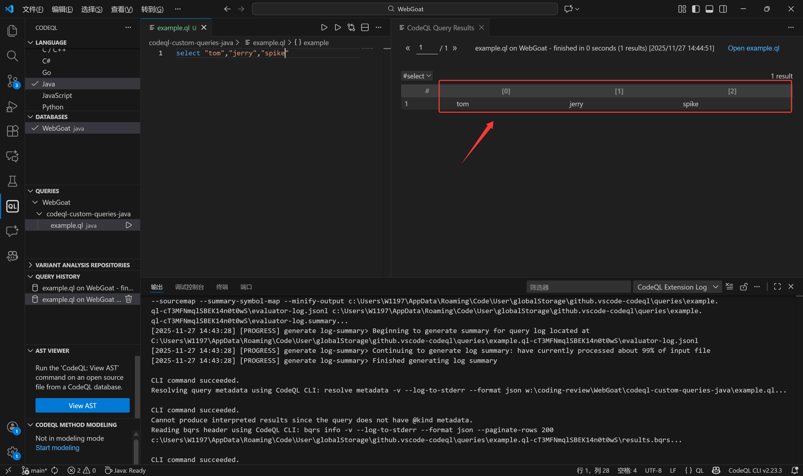
而import是表示导入哪种语言的基础依赖库或者模块
简单来说，会写sql就学得会ql
变量(Variables)
Refer QL语言区别于编程语言
n = 2形如上述内容，在编程语言中属于赋值操作，但在QL中属于判断语句
变量的名称定义和编程语言类似（以字母开头
谓词(Predicates)
Refer QL提供了一种别样的函数实现或者说是逻辑关系 在不同的语言中，对函数的定义和模板都大相径庭 python
funcName(params):
...
return resultjava
public static void funcName(type params){
...
return result
}这些逻辑关系都存在 名称、参数、返回值
这种逻辑关系在ql中也可以实现
predicate funcName(type params){
}
type funcName(type params){
result=results
}predicate是没有结果返回的谓词关键字，类比java中public static void
如果又返回值，那么关键字替换为对应的类型
比如，实现一个逻辑关系——传入一个整型参数i，如果这个整数小于10，那么返回True
bindingset[i]
boolean isUnderTen(int i){
if i in [1..9]
then result=true
else result=false
}
select isUnderTen(5),isUnderTen(15)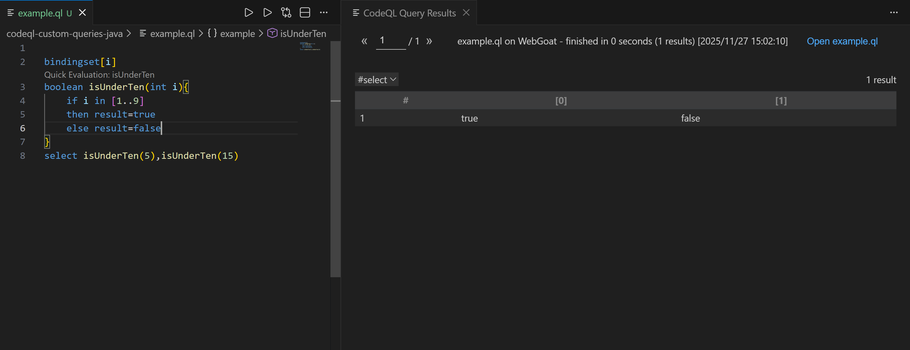
public static boolean isUnderTen(int i) {
return i >= 1 && i <= 9;
}其中bindingset关键字，个人理解是约束输入参数
官方文档中，将bindingset描述为用于一组受限的参数
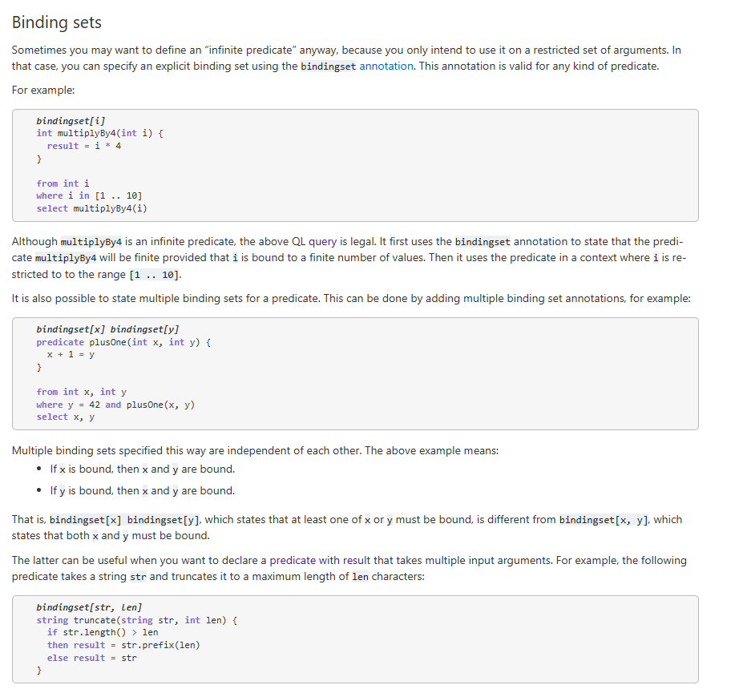
select语句中使用
/*
Compilation errors:
ERROR: "i" is not bound to a value.
*/表达式(Expressions)
Refer 可以使用
[1..3]来表示一个整数的范围，表示集合列表也同理
公式(Formulas)
注解(Annotations)
Refer 涵盖
abstract
private
override
等关键字
类型(Types)
Refer QL提供了类似其他高级语言支持的数据类型
int
float
string
boolean
// 此类型包含日期（以及可选的时间）
date并且提供了很多类型的内置操作，有点类似于java，这点不仅仅体现在其类型的内置方法
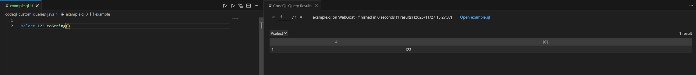
QL提供了类的使用，其特性也一致包括（继承、多态、封装），但是在QL中，类并不“创建”新对象，它只是表示一个逻辑属性。如果一个值满足某个逻辑属性，那么它就属于该类。
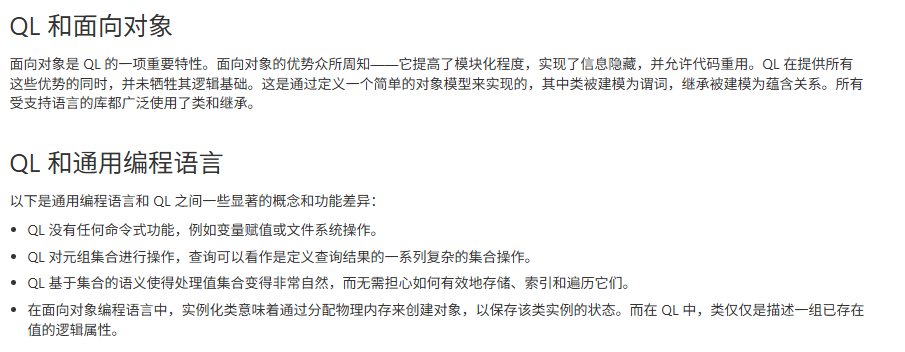
跟java不同：
class 'xxxx' must extend or instanceof at least one type定义一个类必须让其继承或者实例一个基类
以经典的有关类的例子举例
class Animal extends string {
Animal() {
this = "Animal"
}
string bark() {
result = this.toString() + " barks."
}
}
class Dog extends Animal {
Dog() {
this = "Dog"
}
override string bark() {
result = this.toString() + " barks woof."
}
}
from Animal a
select a,a.bark()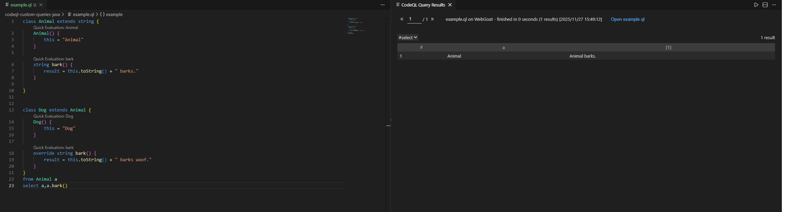
BUT！
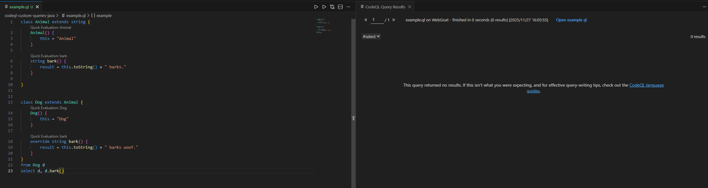
Dog barks woof.
回到刚刚说的
在QL中，类并不“创建”新对象，它只是表示一个逻辑属性。如果一个值满足某个逻辑属性，那么它就属于该类
上述代码中：
如果数据库中存在一个字符串值 "Animal"， 那么它属于 Animal 这个逻辑类，同理
如果数据库中存在一个字符串值 "Dog"， 那么它属于 Dog 这个逻辑类也属于Animal 这个逻辑类
相当于，在string的大盒子【包含了所有字符串】中，放入了一个小盒子Animal【只有字符串="Animal"的内容才能放进去】，然后我们从string大盒子中，复制了一份Animal放进了Animal盒子
现在Animal盒子里面，只有一个Animal值
然后我们在Animal盒子中，再放入了一个名为Dog的盒子【只有字符串="Dog"的内容才能放进去】，由于Animal盒子里面只有一个值，且不满足Dog盒子的要求，所以Dog盒子就是空的
用图片形象的解释：
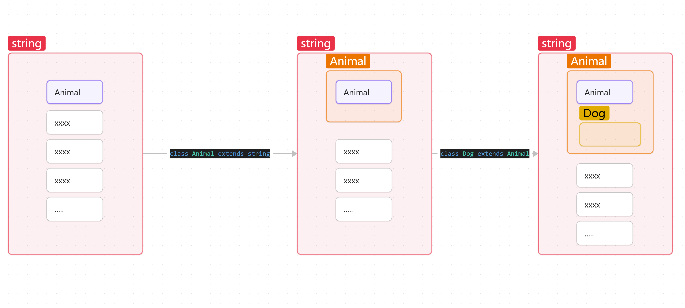
Dog barks woof.在定义Animal时候，把Dog也包含在内
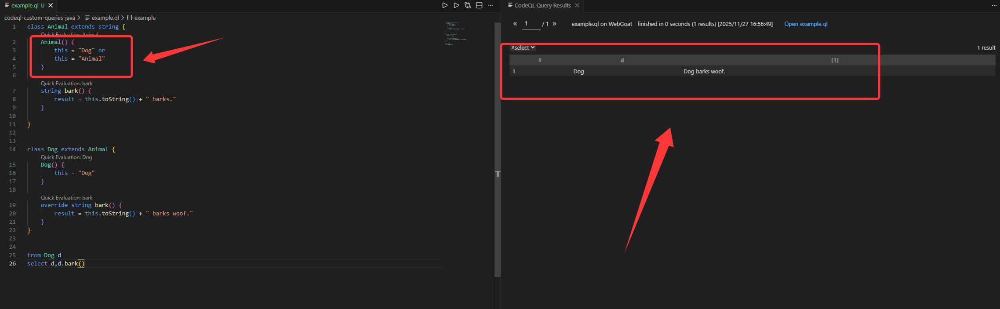
也就是说，其实查询的是笛卡尔积
谨记：不要先入为主的带入JAVA等语言的类功能，QL只是集合定义，不包含实例化
ql中也支持类型的强制转换
Method
模块(Modules)
Refer
模块是以关键字module定义
可以通过在ql文件中显式定义，同时每个ql、qll(QL库文件)都隐式的定义了于文件名相同模块
文件名中从空格会被替换成_
一般我们使用的ql文件可以被认为是一个查询模块
而导入的qll文件则是包含了显式模块的参数化模块
参数化模块需要使用<>包裹参数，例如文档中例子
module M<transformer/1 first, transformer/1 second> {
bindingset[x]
int applyBoth(int x) {
result = second(first(x))
}
}传入了两个参数first、second
模块的导入和其他高级语言类似
import moduleXXX
import moduleYYY as yNode
节点，在QL数据流中十分重要的一个类，其Direct supertypes为newtype类型的TNode
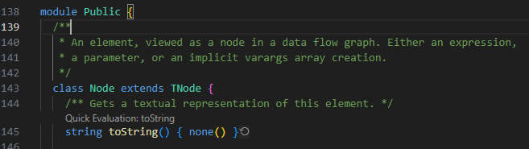
签名(signature)
大致理解成关键字
其中需要注意的是Module Signature—模块签名，类似于java中的接口定义
举个例子：
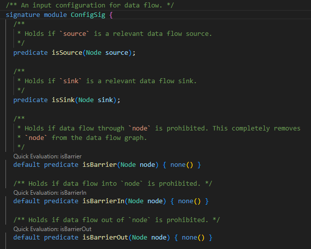
interface
public interface ConfigSig {
void isSource(Node source);
void isSink(Node sink);
...
}我们实现这个模块签名的方式和实现java中接口的方式类似，使用关键字implements
module MyFlowConfiguration implements DataFlow::ConfigSig {
predicate isSource(DataFlow::Node source) {
...
}
predicate isSink(DataFlow::Node sink) {
...
}
}别名(Alias)
环境搭建
使用webgoat靶场测试
git clone https://github.com/WebGoat/WebGoat.gitjdk版本
java -version
openjdk version "25.0.1" 2025-10-21
OpenJDK Runtime Environment (build 25.0.1+8-27)
OpenJDK 64-Bit Server VM (build 25.0.1+8-27, mixed mode, sharing)创建数据库
codeql database create W:\\environments\\codeql\\codeql-databases\\WebGoat --language="java" --command="mvn clean install --file pom.xml" --source-root=W:\\coding-review\\WebGoat可能会耗时比较久
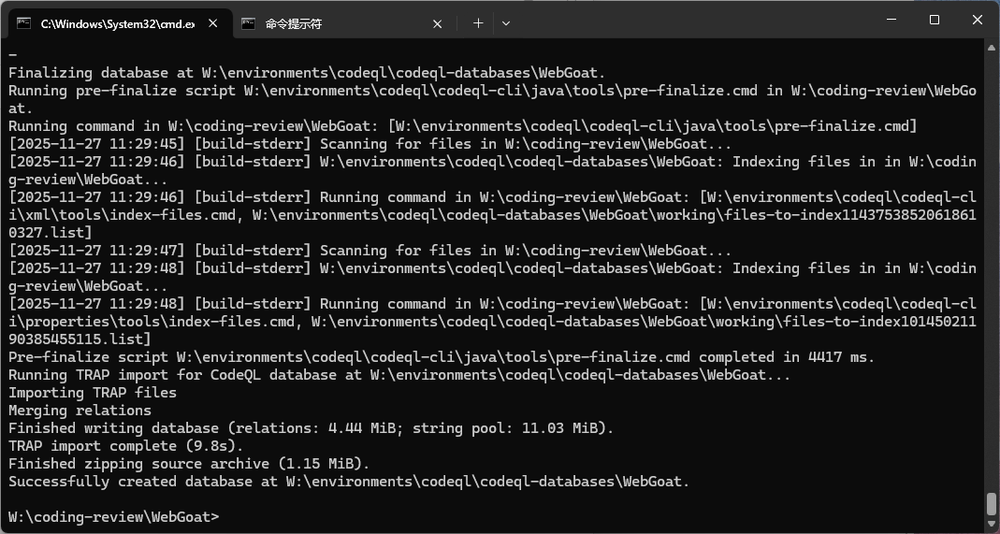
Successfully created database at...即可
进入vscode 打开源码 W:\\coding-review\\WebGoat
选择ql数据库 W:\\environments\\codeql\\codeql-databases\\WebGoat
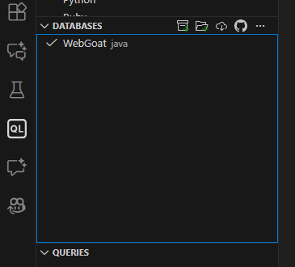
创建query
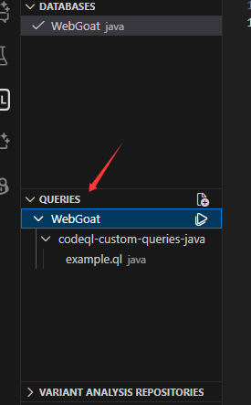
报错信息解决
Failed to run query: Could not resolve library path for W:\coding-review\WebGoat\codeql-custom-queries-java
Error: Failed to run query: Could not resolve library path for W:\coding-review\WebGoat\codeql-custom-queries-java删除自定义查询文件夹，再次创建查询
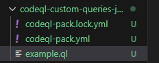
成功运行
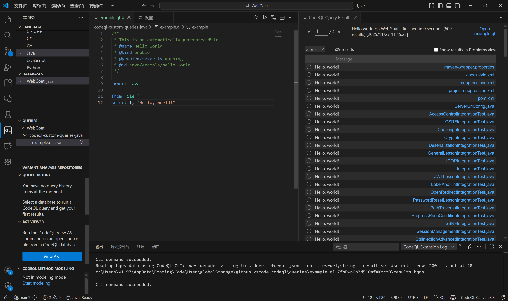
具体漏洞类型-SSRF
以SSRF漏洞为例子
我们主观的认为在代码中，SSRF一般是由于
- 使用了可以发起网络请求的的方法
- 这个方法的参数用户可控
- 参数没有过滤
可以根据接口文档编写以下ql:
import java
import semmle.code.java.dataflow.TaintTracking
import semmle.code.java.dataflow.FlowSources
import semmle.code.java.frameworks.spring.SpringController
from SpringController controller,DataFlow::Node src,MethodCall call
where
// // // 远程可控参数
src instanceof RemoteFlowSource and
// // // 可控参数作为controller中方法的入参
controller.getAMethod().getAParameter() = src.asParameter() and
// // // 这些方法的注解是Mapping注解 即路由
controller.getAMethod().getAnAnnotation().toString().regexpMatch(".*Mapping.*") and
// 调用了openStream方法
call.getMethod().hasName("openStream") and
// // 调用了此方法的对象
call.getCaller()=controller.getAMethod()
select call.getCaller(),"使用了敏感方法:",call.getMethod(),"位于:",call.getLocation()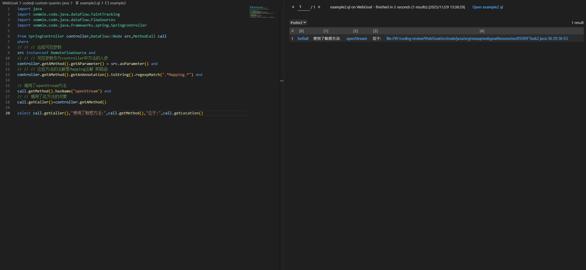
上面的ql是通过查阅文档写出来的，可能有部分功能已经提供官方接口了
但是这样很明显是不完全的：
- sink点不止一个方法，可能这次是methodA，下一次就是methodB
- sink点认为是methodA，但是具体类的methodA才有效【比如这里的openStream是java.net.URL中的，如果是其他类的openStream方法，就会误报】
这种写法属于从答案找过程，并不可取
java依赖库中的接口
QL中数据流使用
引言
在代码自动化安全审计的理论当中，有一个最核心的三元组概念，就是(source，sink和sanitizer)。
- source是指漏洞污染链条的输入点。比如获取http请求的参数部分，就是非常明显的Source。
- sink是指漏洞污染链条的执行点，比如SQL注入漏洞，最终执行SQL语句的函数就是sink(这个函数可能叫query或者exeSql，或者其它)。
- sanitizer又叫净化函数，是指在整个的漏洞链条当中，如果存在一个方法阻断了整个传递链，那么这个方法就叫sanitizer。
如果一个漏洞成立，可以认为是存在有向图： source→sink
但真实代码中基本不会存在这么简单粗暴的有向图，一般参数到sink点都会经过很多处理
def sink(value):
...
def sanitizer(value):
...
@app.route('/vuln', methods=['POST'])
def vuln():
param = request.form.get('param')
try:
...
safe_value = sanitizer(param_converted)
sink(safe_value)
return ...而我们通过source到sink的过程称为污点追踪(TaintTracking)
QL提供了对应的模块
import semmle.code.java.dataflow.TaintTracking我们挖掘漏洞的链路可以抽象成
TaintTracking::(source, sink)官方针对污点追踪提供了一些谓词
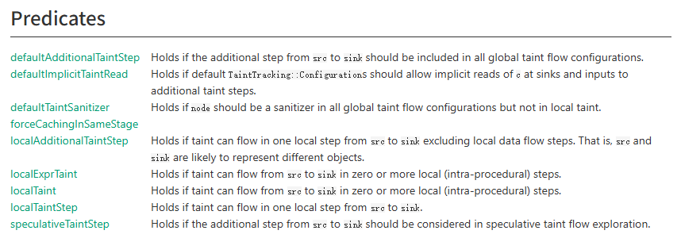
局部数据流
上面中提到的DataFlow称为局部数据流
import semmle.code.java.dataflow.DataFlow以官方文档中例子的前两个进行理解：
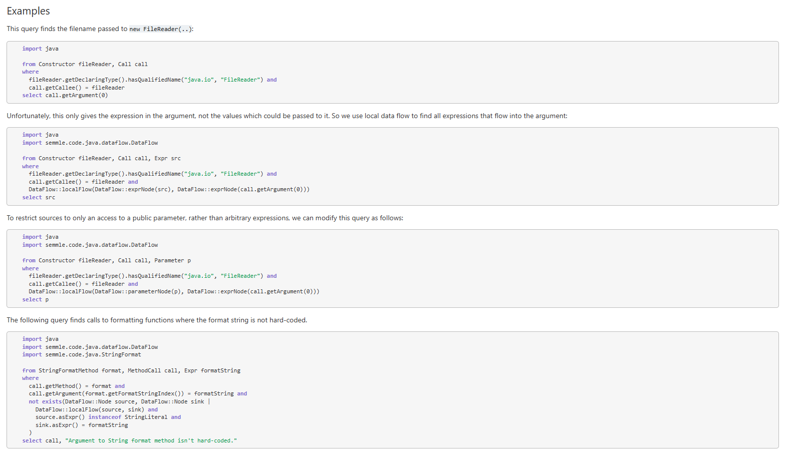
// 所有对象实例
class Constructor
// 所有对可调用对象的调用
class Call
// 获得成员声明的类型
RefType getDeclaringType()
// 此成员的名称为name 且在指定的package和指定type类型中声明
predicate hasQualifiedName(string package, string type, string name)
// 获取此次调用的可调用目标
Callable getCallee()
// 获取此次调用中的第n个参数
Expr getArgument(int n)这样看很抽象，个人理解第一部分的ql语句的作用是
从所有的对象、对象的调用中
找到在java.io包中，对象的类型为FileReader这个类
获取对象调用的第一个参数
java.io.FileReader
new FileReader(xxx)
-->xxx加入对局部数据流的使用：
// 所有的表达式 比如赋值 计算 方法调用
Expr src
/*
DataFlow 数据流模块
predicate localFlow(Node node1, Node node2) 局部数据流 由node1 流向 node2
DataFlow::exprNode(expr) 获得表达式expr的节点
*/
DataFlow::localFlow(
DataFlow::exprNode(src),
DataFlow::exprNode(call.getArgument(0))
)这段增加的限制：
从所有的对象，对象的调用，表达式中
找到所有符合表达式（也可以理解成参数）最终会流入java.io.FileReader这个类的表达式
以前面的SSRF来理解：
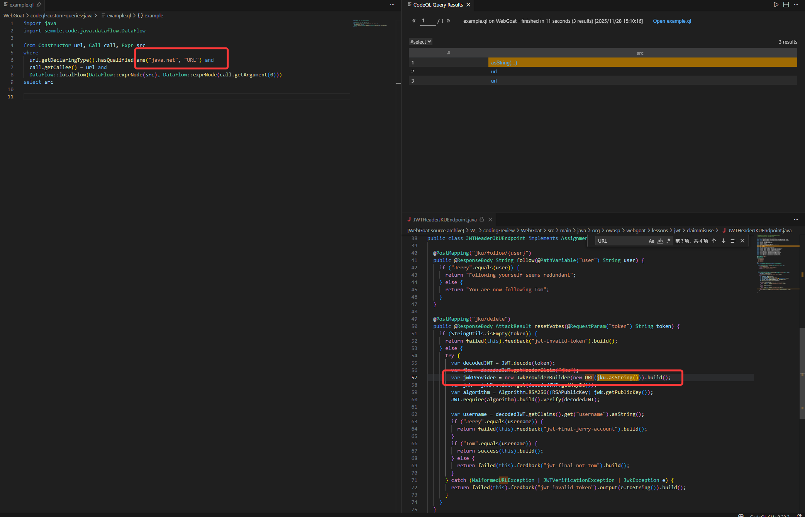
new URL()的入参的参数
全局数据流
全局数据流是一个有参模块
DataFlow::Global<ConfigSig>这里的ConfigSig是要我们实现DataFlow::ConfigSig签名（类比java的interface），可以翻阅前面对签名的内容
到这里，可以正式开始进行污点分析了，以一个污点分析模板举例
import java
import semmle.code.java.dataflow.TaintTracking
import semmle.code.java.dataflow.FlowSources
module GenericTaintConfig implements DataFlow::ConfigSig {
// ========== 核心三要素配置 ==========
predicate isSource(DataFlow::Node src) {
// 输入源定义（二选一）
src instanceof RemoteFlowSource // 通用外部输入
// src instanceof ThreatModelFlowSource // 自定义威胁模型输入
}
predicate isSink(DataFlow::Node sink) {
// 漏洞触发点定义（多选模式）
exists(Method method, MethodCall call |
method.hasName("query|execute|update") and // 常见SQL方法
call.getMethod() = method and
sink.asExpr() = call.getArgument(0) // 参数级定位
)
// 或使用框架特定类（如MyBatis）****
// sink instanceof MyBatisMapperMethodCallAnArgument
}
// ========== 消毒处理配置 ========== !"isBarrier" 替代 "isSanitizer"
predicate isBarrier(DataFlow::Node node) {
// 类型过滤（基础类型视为安全）
node.getType() instanceof PrimitiveType
// 或特定消毒方法检测
// exists(Method sanitizer | sanitizer.hasName("encode|filter") and ...)
}
// ========== 扩展流控制 ==========
predicate isAdditionalFlowStep(DataFlow::Node n1, DataFlow::Node n2) {
// 处理对象转换场景（如toString调用）
exists(MethodCall ma |
ma.getMethod().getName() = "toString" and
ma.getQualifier() = n1.asExpr() and
ma = n2.asExpr()
)
}
}
// ========== 实例化分析引擎 ==========
module GenericTaintFlow = TaintTracking::Global<GenericTaintConfig>;
// ========== 路径查询与结果输出 ==========
from GenericTaintFlow::PathNode source, GenericTaintFlow::PathNode sink
where GenericTaintFlow::flowPath(source, sink)
select sink.getNode(),
"发现[漏洞类型]风险：来自 " + source.getNode() + " 的未经验证数据流向 " + sink.getNode(),
source.getNode(),
"用户输入点",
sink.getNode(),
"敏感操作点"污点分析
在官方给出的规则中，针对SSRF编写了规则
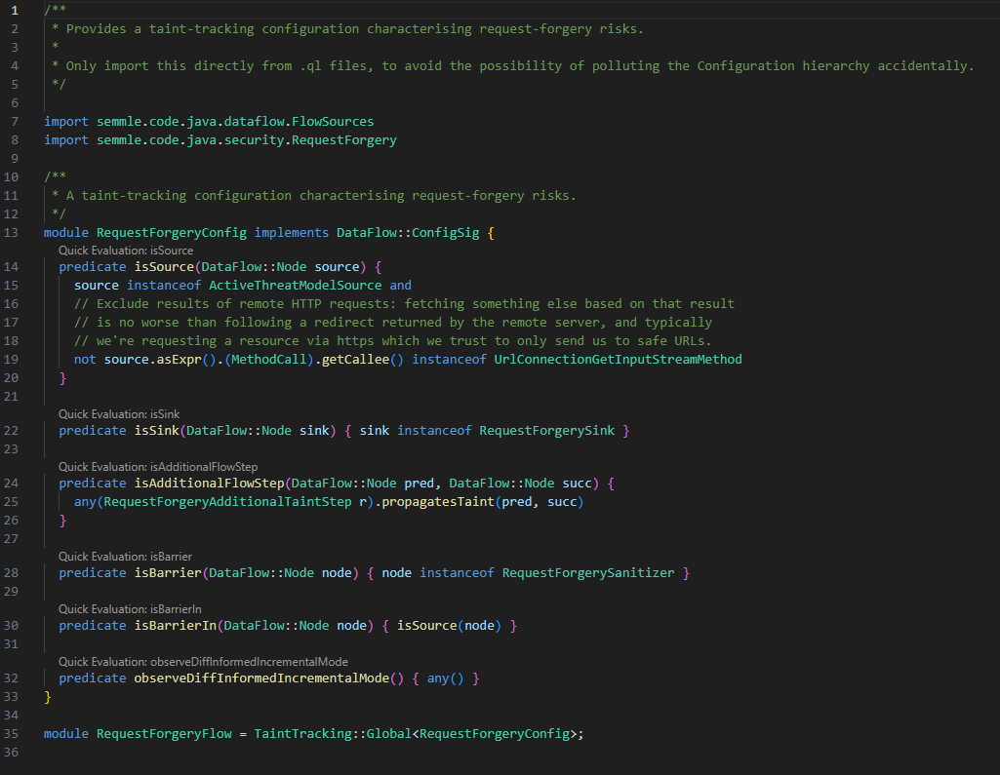
2023-02-02，仅能参考
仍然以WebGoat靶场作为数据库，使用官方文档中提供的接口
source
import java
import semmle.code.java.dataflow.TaintTracking
import semmle.code.java.dataflow.FlowSources
from DataFlow::Node src
where
// 远程数据源
src instanceof RemoteFlowSource
select src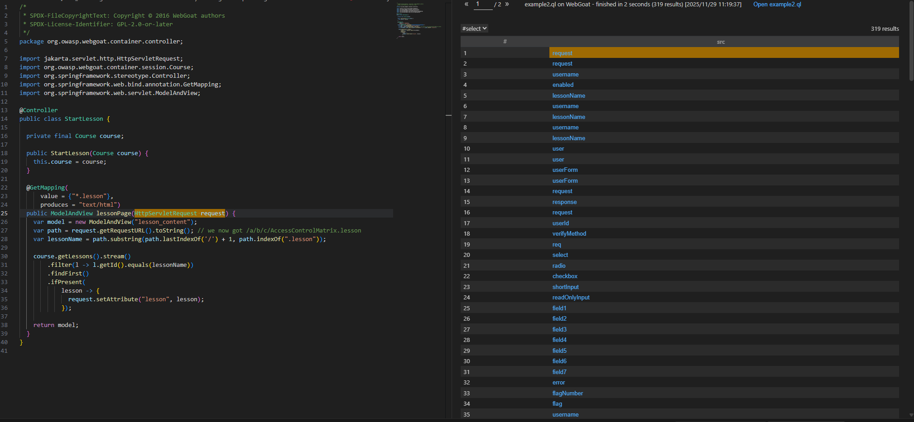
sink 调用创建网络连接的地方
import java
import semmle.code.java.dataflow.DataFlow
import semmle.code.java.security.RequestForgery
from
RequestForgerySink requestForgerySink
select requestForgerySink,requestForgerySink.getEnclosingCallable(),requestForgerySink.getType()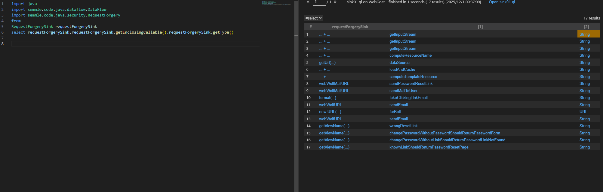
source到sink的Data::Flow
import java
import semmle.code.java.dataflow.TaintTracking
import semmle.code.java.dataflow.FlowSources
import semmle.code.java.security.RequestForgery
module GenericTaintConfig implements DataFlow::ConfigSig {
predicate isSource(DataFlow::Node src) {
src instanceof RemoteFlowSource // 通用外部输入
}
predicate isSink(DataFlow::Node sink) {
sink instanceof RequestForgerySink
}
}
// ========== 实例化分析引擎 ==========
module GenericTaintFlow = TaintTracking::Global<GenericTaintConfig>;
// ========== 路径查询与结果输出 ==========
from GenericTaintFlow::PathNode source, GenericTaintFlow::PathNode sink
where GenericTaintFlow::flowPath(source, sink)
select
"可控输入点: " + source.getNode(),
source.getNode(),
"敏感操作点: " + sink.getNode(),
sink.getNode()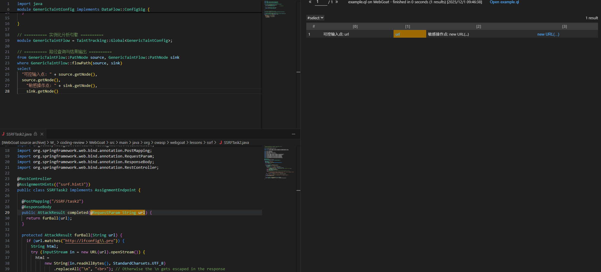
编写一个demo测试
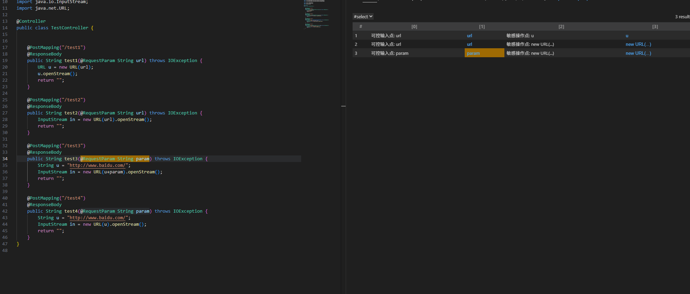
只有可控的输入点才会查询出来
总结
QL是一个十分强大的静态分析的工具，并且官方提供了很多已经封装好的接口，但是现目前通用大模型基本对最新文档没有支持，会胡言乱语的写QL，需要自行查阅文档。
由于最开始我直接从Constructor、MethodCall来编写sink点，导致走了很多弯路并且没有实现覆盖率很高的ql，查询文档才发现其实官方早就写好了。
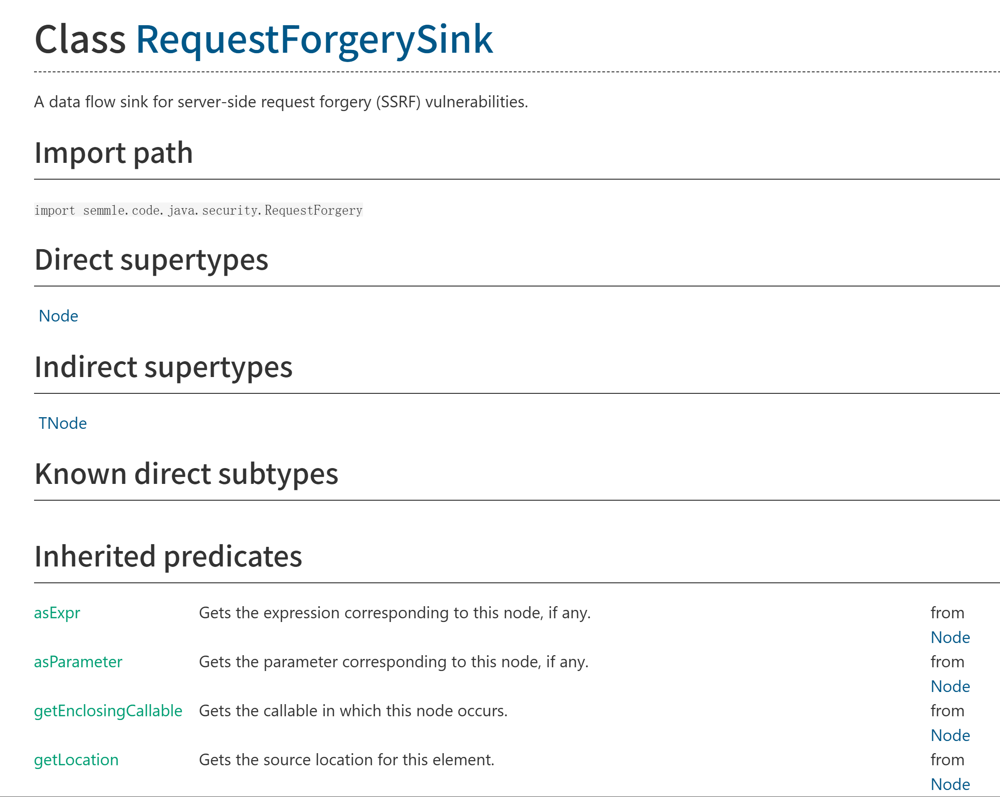